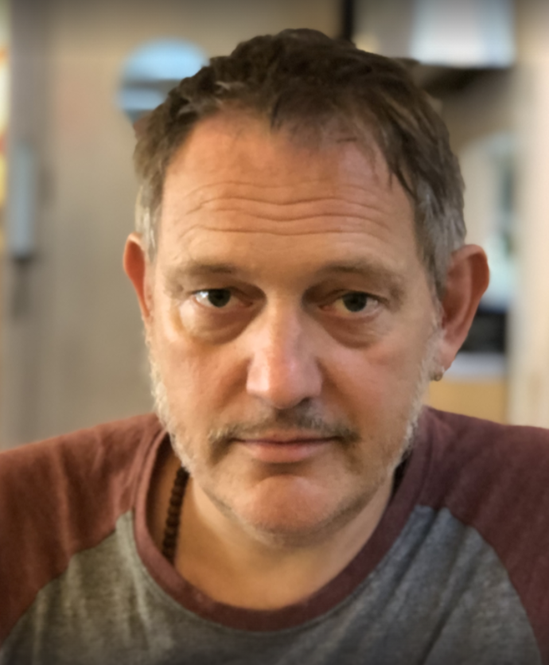
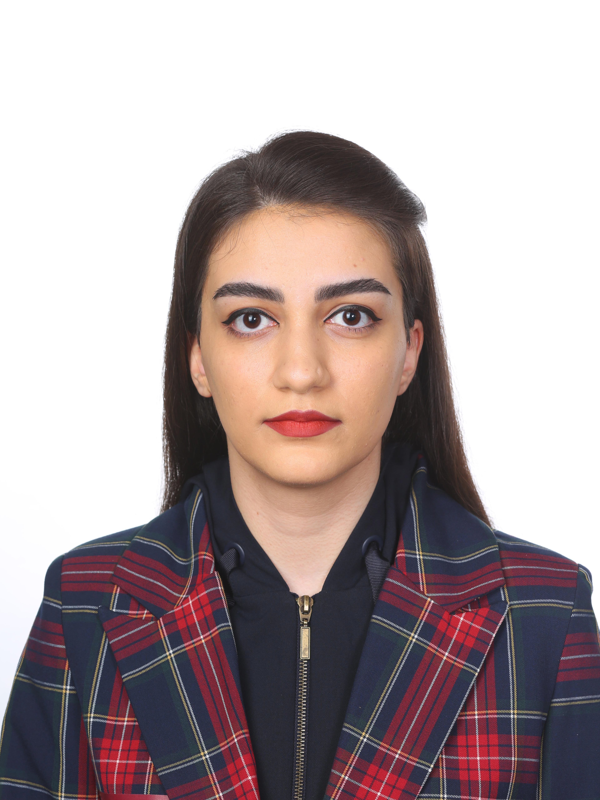
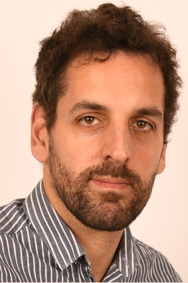

First Shared Task on Multilingual Easy-to-Read Translation
Advance methods for producing easy-to-read versions of texts, with a focus on Catalan, Italian, and Spanish (plus a surprise language).
Quick Links
Overview
Why Easy-to-Read?
Accessible language supports participation for people with language comprehension difficulties (e.g., intellectual disabilities, low literacy), aligning with accessibility and inclusion goals.
What’s new here
MER-TRANS is a multilingual shared task targeting Romance languages (Catalan, Italian, Spanish) and introducing multilingual easy-to-read translation at shared-task scale.
Task
Objective
Automatically produce easy-to-read versions of texts or sentences. Inputs are complex excerpts; outputs should be simplified, readable, and meaning-preserving.
- Primary languages: Catalan, Italian, Spanish
- Surprise task language: disclosed closer to test release
- Max submissions: up to 3 runs per language per team
Scope
Texts come from a domain-focused corpus (democratic participation) simplified by experts following easy-to-read recommendations and validation procedures.
Tip: design systems that generalize—avoid overfitting to a single dataset style.
Data & Resources
Corpus: iDEM (E2R)
- Original + simplified versions aligned at sentence level
- Not parallel across languages (but each language has original↔simplified pairs)
- Authentic variation; multiple text types (informative, news, policy, etc.)
- Format: JSON, one file per language with metadata
Training data policy
No task-specific training set is released. Teams may use existing simplification/adaptation resources (including cross-lingual augmentation).
Examples of relevant external datasets:
- Simplext (ES), FEINA (ES), CLEARS @ IberLEF 2025 (ES)
- SIMPITIKI (IT)
- Newsela (EN), Wikipedia↔Simple Wikipedia, ASSET (EN)
- TSAR (lexical simplification), MLSP (lexical complexity/pipeline)
Trial & Test
- Trial: small set with complex excerpts + reference easy-to-read versions
- Test: complex excerpts only (systems generate simplified outputs)
Evaluation
Surface similarity
BLEU — compares system output to reference simplifications.
Simplification-focused
SARI — measures add/keep/delete operations vs input and references.
Semantic similarity
BERTScore and MeaningBERT — meaning preservation signals.
Readability / Complexity
Readability metrics and complexity classifiers may complement the core metrics to assess accessibility.
Schedule
| Milestone | Date |
|---|
Participation
- Registration window: Feb 16–28, 2026
- Submissions: up to 3 per language per team
Papers
- Paper due: Jun 1, 2026
- Acceptance: Jun 14, 2026
- Camera-ready: Jun 21, 2026
Organization team
-
 Horacio Saggion — Universitat Pompeu Fabra, Spain
Horacio Saggion — Universitat Pompeu Fabra, Spain -
Nelson Perez Rojas — Universidad de Costa Rica, Central America
-

Stefan Bott — Universitat Pompeu Fabra, Spain
-
 Nouran Khallaf — University of Leeds, England
Nouran Khallaf — University of Leeds, England -

Mehrzad Tareh — Universitat Pompeu Fabra, Spain
-

Daniel Adanza — Universitat Pompeu Fabra, Spain
-
Almudena Rascon — Plena Inclusion Madrid, Spain
-
Sandra Szasz — Universitat Pompeu Fabra, Spain
Contact
Primary contact
Horacio Saggion
Universitat Pompeu Fabra (UPF)
Email:
Ethics
The dataset was created within the iDEM project under strict ethics protocols and in compliance with European data protection requirements.